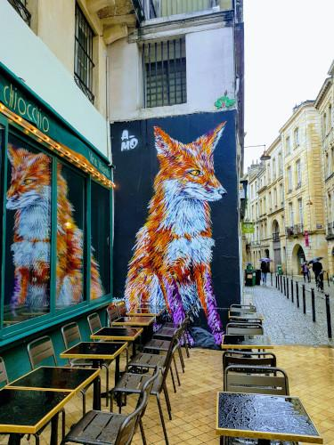
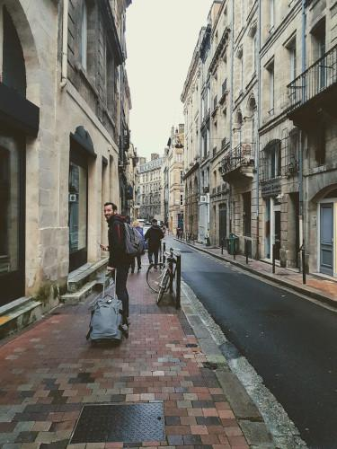
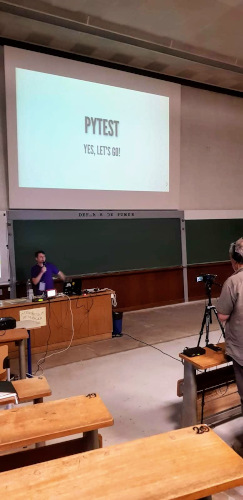

PyCon France 2019 experience

This year (2019) I had the opportunity to participate as a speaker at PyCon France, and it was a great experience. The event was held in Bordeaux, France, a super cozy city, famous for its wines.
I realize now that every country claims they have the best wine, including mine. I have to say, though, that I loved Bordeaux wines, and I bought 4 to bring back home.
Highlights of PyFrance

Everyone was kind to me and I felt really comfortable at the conference. It somehow reminded me of the Argentinian PyCon, maybe because it's free for everyone.
I really liked the "badge" approach. On arrival, you could pick some "flags". I chose the following:
- "I speak english"
- "Speaker"
- "First time"
Some cool others: "Do not talk to me", "No pics please", "Volunteer".
They also had an automatic captioning tool, which generated the transcription live.
I met a bunch of new people and had some interesting talks.
There were some talks I couldn't attend because of the language barrier (I don't speak French). But there's no one to blame for this.
The talk I enjoyed the most was the keynote about "The Role of 21st Century Technology in Protests". It gave me a lot to think about. First, I'm amazed by the creativity and cleverness of the Hong Kong people and their constant push to prevent incidents. Please look up all the stuff they did to counter police efforts to capture people. And second, about the role technology has in society. When left in autocratic hands, it can quickly deviate and be used to harm people, no matter how good intentions are at the beginning.
Technology, in the way's being used in some countries, is scary. What is even scarier is that people are not aware of the dangers.
The only lesson I take from this is that education is key. The more education a person receives, the more resilient, and shielded they become against foreign evil "human" agents, like vaccines. And I mean education, not indoctrination, though in practice it may be harder to draw the line.
My Presentation

I prepared the talk for over 3 weeks: Pytest yes, let's go
Every talk I give takes me a lot of time and effort. I find it really hard to come up with the slides quickly. Luckily I got positive feedback over my talk, so I left the conference quite proud.
For my next pycon (whichever I end up attending), I think I know the topic I'll discuss about: Documentation.
Thanks for reading!
Find me on twitter: @santiwilly